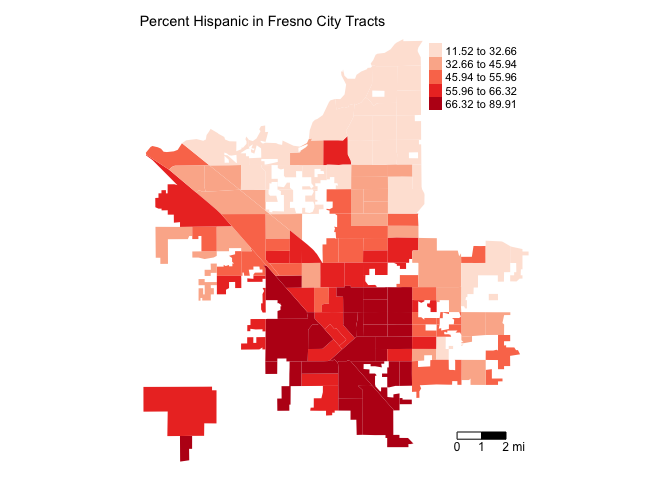
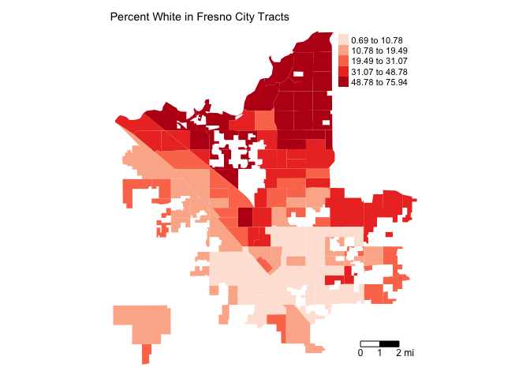

Lab 8: Segregation and Gentrification
CRD 150 - Quantitative Methods in Community Research
Professor Noli Brazil
February 25, 2021
In this guide you will learn how to calculate neighborhood segregation and gentrification measures using R. The objectives of the guide are as follows
- Calculate the Dissimilarity index, a measure of residential evenness.
- Calculate the measure of gentrification used by Ding et al. (2016).
To accomplish these objectives, you will be working with Census tract data for four of the largest cities in California: Fresno, San Diego, San Jose, and San Francisco.
This lab guide follows closely and supplements the material presented in class Handout 8.
Assignment 8 is due by 12:00 pm, March 4th on Canvas. See here for assignment guidelines. You must submit an .Rmd file and its associated .html file. Name the files: yourLastName_firstInitial_asgn08. For example: brazil_n_asgn08.
Open up a R Markdown file
Download the Lab template into an appropriate folder on your hard drive (preferably, a folder named ‘Lab 8’), open it in R Studio, and type and run your code there. The template is also located on Canvas under Files. The template is also located on Canvas under Files. Change the title (“Lab 8”) and insert your name and date. Don’t change anything else inside the YAML (the stuff at the top in between the ---). Also keep the grey chunk after the YAML. For a rundown on the use of R Markdown, see the assignment guidelines.
Installing and loading packages
We will not be using any new packages in this lab. You’ll need to load the following packages. Unlike installing, you will always need to load packages whenever you start a new R session. As such, you’ll always need to use library() in your R Markdown file.
library(sf)
library(tidyverse)
library(tidycensus)
library(tigris)
library(tmap)
library(rmapshaper)
library(knitr)Segregation
Measures of segregation have been fundamental to documenting and understanding the causes and consequences of residential patterns of racial separation. Let’s calculate one of the most common measures of racial residential segregation: Dissimilarity, which measures residential evenness.
Read in the data
The following code uses the Census API to bring in demographic and socioeconomic tract-level data for four of the most populated cities in California: San Diego, San Jose, San Francisco, and Fresno. We won’t go through each line of code in detail because we’ve covered all of these operations and functions in prior labs. We’ve embedded comments within the code that briefly explains what each chunk is doing. Go back to prior guides (or RDS/GWR) if you need further help. I’ve appended 19 to the end of each variable name to signify these are 2019 data. This is done to distinguish these variables from the 2010 ACS data, which we’ll be downloading later when we measure gentrification.
# Bring in 2015-2019 census tract data using the Census API
ca.tracts19 <- get_acs(geography = "tract",
year = 2019,
variables = c(tpop = "B03002_001",
nhwhite = "B03002_003", nhblk = "B03002_004",
nhasn = "B03002_006", hisp = "B03002_012",
medinc19 = "B19013_001", rent19 = "B25064_001",
houseval19 = "B25077_001", bach = "B15003_022",
masters = "B15003_023", prof = "B15003_024",
phd = "B15003_025", totcol = "B15003_001"),
state = "CA",
survey = "acs5",
output = "wide",
geometry = TRUE)
# Make the data tidy, calculate and keep essential vars.
ca.tracts19 <- ca.tracts19 %>%
rename_with(~ sub("E$", "", .x), everything()) %>%
mutate(pnhwhite19 = 100*(nhwhite/tpop), pnhasn19 = 100*(nhasn/tpop),
pnhblk19 = 100*(nhblk/tpop), phisp19 = 100*(hisp/tpop),
pcol19 = 100*(bach+masters+prof+phd)/totcol) %>%
select(c(GEOID,tpop, pnhwhite19, pnhasn19, pnhblk19, phisp19,
nhwhite, nhasn, nhblk, hisp,
medinc19, rent19, houseval19, pcol19))
# Bring in city boundaries
pl <- places(state = "CA", year = 2019, cb = TRUE)
# Keep four large cities in CA
large.cities <- filter(pl, NAME == "San Diego" |
NAME == "San Jose" | NAME == "San Francisco" |
NAME == "Fresno")
#Keep tracts in large cities
large.tracts <- ms_clip(target = ca.tracts19, clip = large.cities, remove_slivers = TRUE)The object large.tracts contains the census tracts located in the four cities. When you view the dataset, you’ll notice that we don’t have any variable indicating which city each tract belongs to. We need the city identifier to calculate segregation for each city and to merge in 2010 place or city-level data when we measure gentrification later on. Let’s append the city GEOID and NAME from the object large.cities to each tract in the object large.tracts. We do this by using the st_join() function, which is a part of the sf package. First, look at the variables already in large.tracts.
names(large.tracts)## [1] "GEOID" "tpop" "pnhwhite19" "pnhasn19" "pnhblk19"
## [6] "phisp19" "nhwhite" "nhasn" "nhblk" "hisp"
## [11] "medinc19" "rent19" "houseval19" "pcol19" "geometry"Then st_join()
large.tracts <- large.tracts %>%
st_join(large.cities, left=FALSE)This function joins the variables from large.cities to the data frame large.tracts, including the variables GEOID.y and NAME, which represent the city GEOID and name.
names(large.tracts)## [1] "GEOID.x" "tpop" "pnhwhite19" "pnhasn19" "pnhblk19"
## [6] "phisp19" "nhwhite" "nhasn" "nhblk" "hisp"
## [11] "medinc19" "rent19" "houseval19" "pcol19" "STATEFP"
## [16] "PLACEFP" "PLACENS" "AFFGEOID" "GEOID.y" "NAME"
## [21] "LSAD" "ALAND" "AWATER" "geometry"We don’t need all of these variables, so let’s use select() to remove the variables we don’t need.
large.tracts <- large.tracts %>%
select(-(STATEFP:AFFGEOID), -(LSAD:AWATER))Mapping
Before calculating segregation, you should map neighborhood racial/ethnic composition in order to gain a visual understanding of how race/ethnic groups are spatially distributed in your study region. For example, let’s map percent Hispanic in Fresno.
large.tracts %>%
filter(NAME == "Fresno") %>%
tm_shape(unit = "mi") +
tm_polygons(col = "phisp19", style = "quantile",palette = "Reds",
border.alpha = 0, title = "") +
tm_scale_bar(breaks = c(0, 1, 2), text.size = 0.75, position = c("right", "bottom")) + tm_layout(main.title = "Percent Hispanic in Fresno City Tracts", main.title.size = 0.9, frame = FALSE)
How does this spatial distribution compare to percent non-Hispanic white?
large.tracts %>%
filter(NAME == "Fresno") %>%
tm_shape(unit = "mi") +
tm_polygons(col = "pnhwhite19", style = "quantile",palette = "Reds",
border.alpha = 0, title = "") +
tm_scale_bar(breaks = c(0, 1, 2), text.size = 0.75, position = c("right", "bottom")) + tm_layout(main.title = "Percent White in Fresno City Tracts", main.title.size = 0.9,
frame = FALSE)
It looks like a North/South divide. Map the other two race/ethnic groups in Fresno and all the groups in the other three cities.
Dissimilarity Index
The most common measure of residential evenness is the Dissimilarity Index D. To calculate D, we’ll follow the Dissimilarity index formula on page 8 of Handout 8. We will calculate Black/White, Hispanic/White, and Asian/White Dissimilarity. We first need to calculate the total population by race/ethnicity for each city. This is the value \(T_m\) and \(T_k\) in the formula. We do this by using the group_by() and mutate() functions.
large.tracts <- large.tracts %>%
group_by(NAME) %>%
mutate(nhwhitec = sum(nhwhite), nhasnc = sum(nhasn),
nhblkc = sum(nhblk), hispc = sum(hisp),
tpopc = sum(tpop)) %>%
ungroup()The group_by() function tells R that all future functions on large.tracts will be grouped according to the variable NAME, which is the city name. We use the sum() function within the mutate() function to sum up, for example, the non-Hispanic white population nhwhite for each city. We name this variable nhwhitec. If you type in View(large.tracts), you should find that the variable nhwhitec provides the same value for all tracts within the same city. We do this for all the other race/ethnic groups.
The function ungroup() at the end of the code tells R to stop the grouping. For example, we see the results after grouping by NAME
large.tracts %>%
group_by(NAME)## Simple feature collection with 825 features and 21 fields
## geometry type: MULTIPOLYGON
## dimension: XY
## bbox: xmin: -123.0139 ymin: 32.53471 xmax: -116.9057 ymax: 37.86334
## geographic CRS: NAD83
## # A tibble: 825 x 22
## # Groups: NAME [4]
## GEOID.x tpop pnhwhite19 pnhasn19 pnhblk19 phisp19 nhwhite nhasn nhblk hisp
## <chr> <dbl> <dbl> <dbl> <dbl> <dbl> <dbl> <dbl> <dbl> <dbl>
## 1 0607502… 4597 42.1 13.2 2.41 39.1 1937 606 111 1797
## 2 0607502… 4523 59.1 12.0 2.06 19.1 2675 542 93 864
## 3 0608551… 3020 9.11 40.6 4.11 37.5 275 1226 124 1134
## 4 0608550… 4373 2.72 35.3 1.14 59.5 119 1544 50 2604
## 5 0607300… 5271 53.1 36.1 0.247 5.92 2799 1902 13 312
## 6 0607300… 3726 61.8 2.44 1.29 32.0 2302 91 48 1191
## 7 0607300… 3344 66.4 3.71 3.23 23.3 2220 124 108 780
## 8 0607300… 2659 83.2 1.81 0.564 12.3 2211 48 15 328
## 9 0601900… 4750 19.2 2.74 13.4 63.9 911 130 637 3035
## 10 0601900… 3046 13.6 16.3 6.17 62.2 413 498 188 1894
## # … with 815 more rows, and 12 more variables: medinc19 <dbl>, rent19 <dbl>,
## # houseval19 <dbl>, pcol19 <dbl>, GEOID.y <chr>, NAME <chr>,
## # geometry <MULTIPOLYGON [°]>, nhwhitec <dbl>, nhasnc <dbl>, nhblkc <dbl>,
## # hispc <dbl>, tpopc <dbl>that the tibble large.tracts is grouped (Groups: NAME [4]). Use ungroup() to, well, ungroup the tibble.
large.tracts %>%
group_by(NAME) %>%
ungroup()## Simple feature collection with 825 features and 21 fields
## geometry type: MULTIPOLYGON
## dimension: XY
## bbox: xmin: -123.0139 ymin: 32.53471 xmax: -116.9057 ymax: 37.86334
## geographic CRS: NAD83
## # A tibble: 825 x 22
## GEOID.x tpop pnhwhite19 pnhasn19 pnhblk19 phisp19 nhwhite nhasn nhblk hisp
## <chr> <dbl> <dbl> <dbl> <dbl> <dbl> <dbl> <dbl> <dbl> <dbl>
## 1 0607502… 4597 42.1 13.2 2.41 39.1 1937 606 111 1797
## 2 0607502… 4523 59.1 12.0 2.06 19.1 2675 542 93 864
## 3 0608551… 3020 9.11 40.6 4.11 37.5 275 1226 124 1134
## 4 0608550… 4373 2.72 35.3 1.14 59.5 119 1544 50 2604
## 5 0607300… 5271 53.1 36.1 0.247 5.92 2799 1902 13 312
## 6 0607300… 3726 61.8 2.44 1.29 32.0 2302 91 48 1191
## 7 0607300… 3344 66.4 3.71 3.23 23.3 2220 124 108 780
## 8 0607300… 2659 83.2 1.81 0.564 12.3 2211 48 15 328
## 9 0601900… 4750 19.2 2.74 13.4 63.9 911 130 637 3035
## 10 0601900… 3046 13.6 16.3 6.17 62.2 413 498 188 1894
## # … with 815 more rows, and 12 more variables: medinc19 <dbl>, rent19 <dbl>,
## # houseval19 <dbl>, pcol19 <dbl>, GEOID.y <chr>, NAME <chr>,
## # geometry <MULTIPOLYGON [°]>, nhwhitec <dbl>, nhasnc <dbl>, nhblkc <dbl>,
## # hispc <dbl>, tpopc <dbl>and the grouping is gone! It’s always good practice to ungroup() a data set if you are saving it for future use (rather than using it as a summary table as we’ve doing so far in the class).
We’ve got the values for \(T_m\), \(T_k\), \(t_{im}\), and \(t_{ik}\), so we can calculate the rest of the formula, breaking it down piece-by-piece like we did in the handout and in Tuesday’s lecture. The following code calculates the Dissimilarity indices.
large.tracts %>%
group_by(NAME) %>%
mutate(d.wb = abs(nhblk/nhblkc-nhwhite/nhwhitec),
d.wa = abs(nhasn/nhasnc-nhwhite/nhwhitec),
d.wh = abs(hisp/hispc-nhwhite/nhwhitec)) %>%
summarize(BWD = 0.5*sum(d.wb, na.rm=TRUE), AWD = 0.5*sum(d.wa, na.rm=TRUE),
HWD = 0.5*sum(d.wh, na.rm=TRUE)) %>%
ungroup()## Simple feature collection with 4 features and 4 fields
## geometry type: MULTIPOLYGON
## dimension: XY
## bbox: xmin: -123.0139 ymin: 32.53471 xmax: -116.9057 ymax: 37.86334
## geographic CRS: NAD83
## # A tibble: 4 x 5
## NAME BWD AWD HWD geometry
## <chr> <dbl> <dbl> <dbl> <MULTIPOLYGON [°]>
## 1 Fresno 0.467 0.387 0.407 (((-119.7546 36.70596, -119.7545 36.70029, -119.7…
## 2 San Diego 0.556 0.468 0.537 (((-116.9537 32.56761, -116.9492 32.56768, -116.9…
## 3 San Fran… 0.526 0.399 0.431 (((-123.0139 37.70036, -123.0078 37.69894, -123.0…
## 4 San Jose 0.420 0.478 0.483 (((-121.6798 37.15859, -121.672 37.16406, -121.67…Let’s break the code down so we’re all on the same page. We use mutate() to calculate the tract level contributions to the index, i.e. the value \(\left|\frac{t_{rm}}{T_m} - \frac{t_{rk}}{T_k}\right|\) for each neighborhood \(i\). Next, we turn to summarize() to finish the rest of the job. Within summarize(), we use the function sum() to add the neighborhood specific values in Equation 1 in Handout 8. In other words, sum() is performing the \(\sum\limits_{i}^{N}\) that adds up \(\left|\frac{t_{rm}}{T_m} - \frac{t_{rk}}{T_k}\right|\). Finally, multiply the summed up value by 0.5 to get the final indices.
The resulting values provide the Dissimilarity indices for Black/White (BWD), Asian/White (AWD), and Hispanic/White (HWD). In all of these cases, we calculate segregation from white residents, but you can calculate segregation for any race/ethnicity combination (e.g. Black/Hispanic). Instead of just copying and pasting the chunk of code above into your console, make sure you understand what each line of code is doing. Not only will it help you become a more seasoned R coder, but it will also help you better understand the underlying math behind the Dissimilarity index.
The results table we got above is a little messy. Let’s clean it up by doing two things: (1) Drop the geometry column using st_drop_geometry(), which is a part of the sf package, and (2) use the kable() function, which is a part of the knitr package, to make a nicely formatted table. We add these functions to the bottom of the code we ran directly above.
large.tracts %>%
group_by(NAME) %>%
mutate(d.wb = abs(nhblk/nhblkc-nhwhite/nhwhitec),
d.wa = abs(nhasn/nhasnc-nhwhite/nhwhitec),
d.wh = abs(hisp/hispc-nhwhite/nhwhitec)) %>%
summarize(BWD = 0.5*sum(d.wb, na.rm=TRUE), AWD = 0.5*sum(d.wa, na.rm=TRUE),
HWD = 0.5*sum(d.wh, na.rm=TRUE)) %>%
ungroup() %>%
st_drop_geometry() %>%
kable(digits = 3)| NAME | BWD | AWD | HWD |
|---|---|---|---|
| Fresno | 0.467 | 0.387 | 0.407 |
| San Diego | 0.556 | 0.468 | 0.537 |
| San Francisco | 0.526 | 0.399 | 0.431 |
| San Jose | 0.420 | 0.478 | 0.483 |
Looks much better. The argument digits = 3 within kable() rounds up values to three significant digits after the decimal.
The Dissimilarity index for Black/White in Fresno is 0.467. The interpretation of this value is that 46.7% of black residents would need to move neighborhoods in order to achieve a uniform distribution of black and white residents across neighborhoods in the city.
Gentrification
We go from one form of place-based inequality in segregation to another form in gentrification. How do we determine whether a neighborhood is undergoing gentrification? Let’s find out using a quantitative approach. We’ll determine which neighborhoods are experiencing gentrification in the City of Fresno, an issue that has gotten a lot of local attention.
Let’s first filter Fresno tracts from large.tracts.
fresno.tracts <- large.tracts %>%
filter(NAME == "Fresno")Read in the data
We will use the Ding et al. (2016) method outlined in Handout 8 for measuring gentrification. The measure defines gentrification as follows
- A neighborhood is eligible for gentrification if its median household income is less than the city’s median household income at the beginning of the observation period.
- An eligible neighborhood gentrifies if its change from the beginning to the end of the observation period in median gross rent or median housing value is greater than the change in the city and the change in its percent of residents that have a college degree is more than the change in the city.
We will define the beginning of the period using 2006-2010 ACS data (this is the first ACS period using 2010 tract boundaries) and the end of the period using 2015-2019 ACS data. We already downloaded the 2015-2019 ACS data on rent, housing values and percent college for census tracts. We will need to read in 2006-2010 tract-level median gross rent, median housing value and percent with a college degree. Notice that I attached a 10 to the end of each variable to signify that it is for 2006-2010. Also note that we don’t need any spatial data since fresno.tracts is already an sf object, so we don’t include the argument geometry = TRUE.
# Bring in 2006-2010 census tract data using the Census API
ca.tracts10 <- get_acs(geography = "tract",
year = 2010,
variables = c(medinc10 = "B19013_001", rent10 = "B25064_001",
houseval10 = "B25077_001", bachm = "B15002_015",
mastersm = "B15002_016", profm = "B15002_017",
phdm = "B15002_018", bachf = "B15002_032",
mastersf = "B15002_033", proff = "B15002_034",
phdf = "B15002_035", totcol = "B15002_001"),
state = "CA",
survey = "acs5",
output = "wide")
# Make the data tidy, calculate and keep essential vars.
ca.tracts10 <- ca.tracts10 %>%
rename_with(~ sub("E$", "", .x), everything()) %>%
mutate(pcol10 = 100*(bachm+mastersm+profm+phdm+bachf+mastersf+proff+phdf)/totcol) %>%
select(c(GEOID,medinc10, rent10, houseval10, pcol10)) Note that you might get an error that states
Calls: <Anonymous> ... withCallingHandlers -> withVisible -> eval -> eval -> get_acs
Execution haltedSometimes the Census API experiences a hiccup like above when downloading older data such as 2006-2010 ACS. My advice is to wait a few minutes (or more) and the run the code (or knit your file) again until the hiccup goes away.
As described in Handout 8, we need to compare neighborhoods to the entire City of Fresno This means we need to bring in city data for the beginning (2006-10) and end (2015-2019) periods. First, let’s bring in 2006-2010 ACS data for all places in California using get_acs(). We use the argument geography = "place". We specify the data as place level 2006-2010 by attaching a c10 to the end of each variable. No need for the spatial data, so we don’t include geometry = TRUE here.
# Bring in census tract data using the Census API
ca.places10 <- get_acs(geography = "place",
year = 2010,
variables = c(medincc10 = "B19013_001", rentc10 = "B25064_001",
housevalc10 = "B25077_001", bachm = "B15002_015",
mastersm = "B15002_016", profm = "B15002_017",
phdm = "B15002_018", bachf = "B15002_032",
mastersf = "B15002_033", proff = "B15002_034",
phdf = "B15002_035", totcol = "B15002_001"),
state = "CA",
survey = "acs5",
output = "wide")
# Make the data tidy, calculate and keep essential vars. Also take out zero population tracts
ca.places10 <- ca.places10 %>%
rename_with(~ sub("E$", "", .x), everything()) %>%
mutate(pcolc10 = 100*(bachm+mastersm+profm+phdm+bachf+mastersf+proff+phdf)/totcol) %>%
select(c(GEOID,medincc10, rentc10, housevalc10, pcolc10)) We next need to bring in current (2015-2019) place level data. We specify the data as place level 2015-2019 by attaching a c19 to the end of each variable. No need for the spatial data, so we don’t include geometry = TRUE here.
# Bring in census tract data using the Census API
ca.places19 <- get_acs(geography = "place",
year = 2019,
variables = c(medincc19 = "B19013_001", rentc19 = "B25064_001",
housevalc19 = "B25077_001", bachc = "B15003_022",
mastersc = "B15003_023", profc = "B15003_024",
phdc = "B15003_025", totcolc = "B15003_001"),
state = "CA",
survey = "acs5",
output = "wide")
# Make the data tidy, calculate and keep essential vars. Also take out zero population tracts
ca.places19 <- ca.places19 %>%
rename_with(~ sub("E$", "", .x), everything()) %>%
mutate(pcolc19 = 100*(bachc+mastersc+profc+phdc)/totcolc) %>%
select(c(GEOID,medincc19, rentc19, housevalc19, pcolc19)) The sf object fresno.tracts contains 2015-2019 ACS tract-level data. We join ca.tracts10, which contains 2006-2010 ACS tract-level data, using left_join(). What are the IDs we need in order to join the two objects?
names(fresno.tracts)## [1] "GEOID.x" "tpop" "pnhwhite19" "pnhasn19" "pnhblk19"
## [6] "phisp19" "nhwhite" "nhasn" "nhblk" "hisp"
## [11] "medinc19" "rent19" "houseval19" "pcol19" "GEOID.y"
## [16] "NAME" "geometry" "nhwhitec" "nhasnc" "nhblkc"
## [21] "hispc" "tpopc"names(ca.tracts10)## [1] "GEOID" "medinc10" "rent10" "houseval10" "pcol10"The GEOID is GEOID.x in fresno.tracts and GEOID in ca.tracts10
fresno.tracts <- fresno.tracts %>%
left_join(ca.tracts10, by = c("GEOID.x" = "GEOID"))Next, we need to join ca.places10 and ca.places19, which contain 2006-2010 and 2015-2019 Fresno city-level data, respectively, to fresno.tracts. What are the join IDs?
names(fresno.tracts)## [1] "GEOID.x" "tpop" "pnhwhite19" "pnhasn19" "pnhblk19"
## [6] "phisp19" "nhwhite" "nhasn" "nhblk" "hisp"
## [11] "medinc19" "rent19" "houseval19" "pcol19" "GEOID.y"
## [16] "NAME" "geometry" "nhwhitec" "nhasnc" "nhblkc"
## [21] "hispc" "tpopc" "medinc10" "rent10" "houseval10"
## [26] "pcol10"names(ca.places10)## [1] "GEOID" "medincc10" "rentc10" "housevalc10" "pcolc10"names(ca.places19)## [1] "GEOID" "medincc19" "rentc19" "housevalc19" "pcolc19"The city-level GEOID is GEOID.y in fresno.tracts and GEOID in both ca.places10 and ca.places19.
fresno.tracts <- fresno.tracts %>%
left_join(ca.places10, by = c("GEOID.y" = "GEOID")) %>%
left_join(ca.places19, by = c("GEOID.y" = "GEOID")) Look at the data to make sure the joins went as expected.
glimpse(fresno.tracts)We’re done!
Gentrification eligible tracts
We’ve got all the data we need in one data object (fresno.tracts). Now we can start constructing our gentrification measure. First, let’s determine whether a tract is eligible to gentrify in the first place. A neighborhood is eligible for gentrification if its median household income is less than the city’s median household income in 2006-2010. We create a variable named eligible that specifies whether a neighborhood is eligible or not using the ifelse() function within mutate().
fresno.tracts <- fresno.tracts %>%
mutate(eligible = ifelse(medinc10 < medincc10, "Eligible", "Not Eligible"))A neighborhood eligible to gentrify is given the label “Eligible”. What is the proportion of neighborhoods that are eligible to gentrify? Here, we are summarizing a categorical variable, which we covered in Lab 4. Let’s put the results in a nice looking table by dropping the geometry using the function st_drop_geometry() and creating a nicely formatted table using the function kable(). We use the argument digits = 2 to round the values to two significant digits after the decimal place.
fresno.tracts %>%
group_by(eligible) %>%
summarize(n = n()) %>%
mutate(proportion = n / sum(n)) %>%
ungroup() %>%
st_drop_geometry() %>%
kable(digits = 2)| eligible | n | proportion |
|---|---|---|
| Eligible | 71 | 0.57 |
| Not Eligible | 52 | 0.42 |
| NA | 1 | 0.01 |
Gentrifying tracts
An eligible neighborhood gentrifies if its change between 2006-2010 and 2015-2019 in median gross rent or median housing value is greater than the change in the city and the change in its percent of residents that have a college degree is more than the change in the city.
Let’s first calculate the tract-level differences in rent rentch, housing values housech, and percent with a college degree pcolch.
fresno.tracts <- fresno.tracts %>%
mutate(rentch = rent19-rent10, housech = houseval19-houseval10,
pcolch = pcol19-pcol10)Next, we calculate the city-level differences in rent rentchc, housing values housechc, and percent with a college degree pcolchc.
fresno.tracts <- fresno.tracts %>%
mutate(rentchc = rentc19-rentc10, housechc = housevalc19-housevalc10,
pcolchc = pcolc19-pcolc10)We now have all the pieces to construct a variable gent that labels tracts as “Not eligible”, “Gentrifying”, and “Not Gentrifying”. We do this using a set of ifelse() statements within mutate().
fresno.tracts <- fresno.tracts %>%
mutate(gent = ifelse(eligible == "Not Eligible", "Not Eligible",
ifelse(eligible == "Eligible" & pcolch > pcolchc &
(rentch > rentchc | housech > housechc), "Gentrifying",
"Not Gentrifying")))Examining Gentrification
What is the proportion of neighborhoods in Fresno that experienced gentrification? Let’s put it in a nice looking table by dropping the geometry using the function st_drop_geometry() and using the function kable().
fresno.tracts %>%
group_by(gent) %>%
summarize(n = n()) %>%
mutate(proportion = n / sum(n)) %>%
ungroup() %>%
st_drop_geometry() %>%
kable(digits = 2)| gent | n | proportion |
|---|---|---|
| Gentrifying | 22 | 0.18 |
| Not Eligible | 52 | 0.42 |
| Not Gentrifying | 49 | 0.40 |
| NA | 1 | 0.01 |
Approximately 18 percent of neighborhoods in Fresno experienced gentrification between 2010 and 2019. Where are these neighborhoods located? Let’s make a nice color patch map using our best buddy tm_shape().
tm_shape(fresno.tracts, unit = "mi") +
tm_polygons(col = "gent", style = "cat",palette = "Paired", border.alpha = 0,
title = "") +
tm_scale_bar(breaks = c(0, 1, 2), text.size = 0.75, position = c("right", "bottom")) +
tm_layout(main.title = "2010-2019 Gentrification Status in Fresno", main.title.size = 0.95, frame = FALSE, legend.outside = TRUE)Several students indicated in the first day of class that they are from Fresno. Is your neighborhood gentrifying based on the measure we constructed above?
What is the racial/ethnic composition of gentrifying vs non-gentrifying neighborhoods? We are summarizing two variables, one categorical and the other numeric. We covered this in Lab 4. Here is a summary table showing mean 2019 race/ethnicity by gentrification status. Note that I removed the tracts missing gentrification status from the table using filter().
fresno.tracts %>%
filter(is.na(gent) == FALSE) %>%
group_by(gent) %>%
summarize("% White" = mean(pnhwhite19),
"% Black" = mean(pnhblk19),
"% Hispanic" = mean(phisp19),
"% Asian" = mean(pnhasn19)) %>%
st_drop_geometry() %>%
kable(digits = 2)| gent | % White | % Black | % Hispanic | % Asian |
|---|---|---|---|---|
| Gentrifying | 15.86 | 7.26 | 63.41 | 11.45 |
| Not Eligible | 42.85 | 4.55 | 35.80 | 13.55 |
| Not Gentrifying | 17.86 | 8.15 | 60.25 | 10.83 |

This work is licensed under a Creative Commons Attribution-NonCommercial 4.0 International License.
Website created and maintained by Noli Brazil